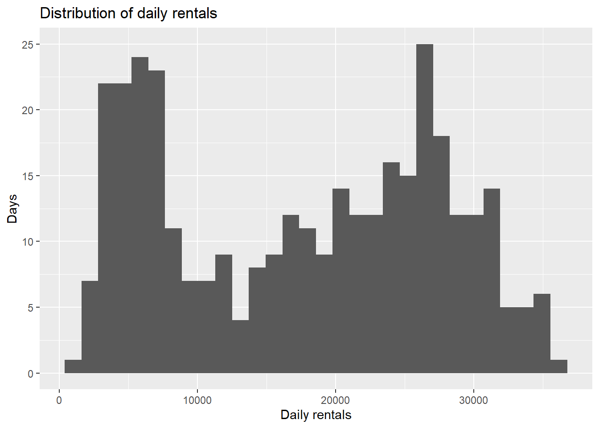
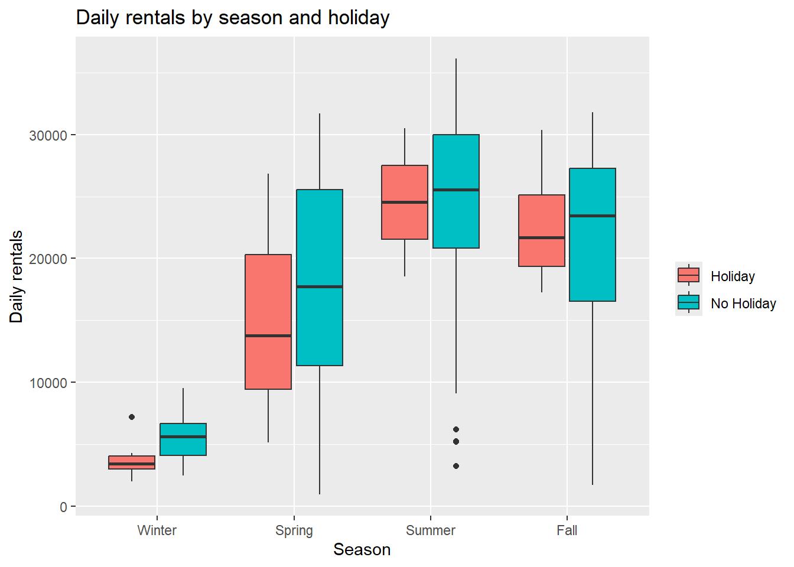
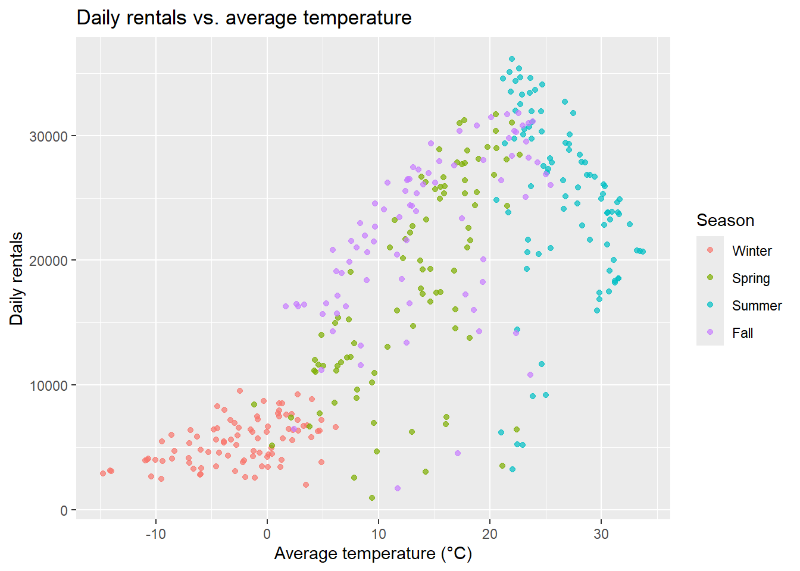
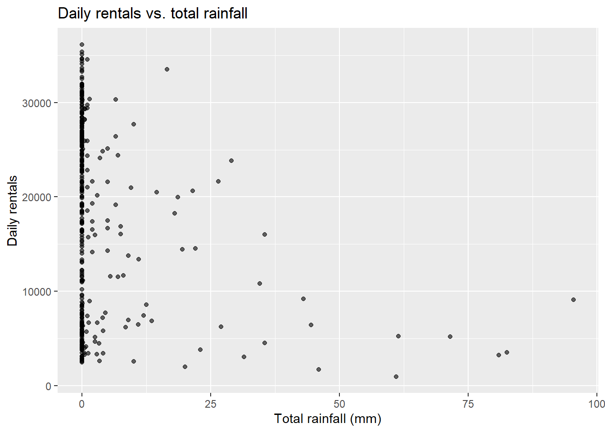
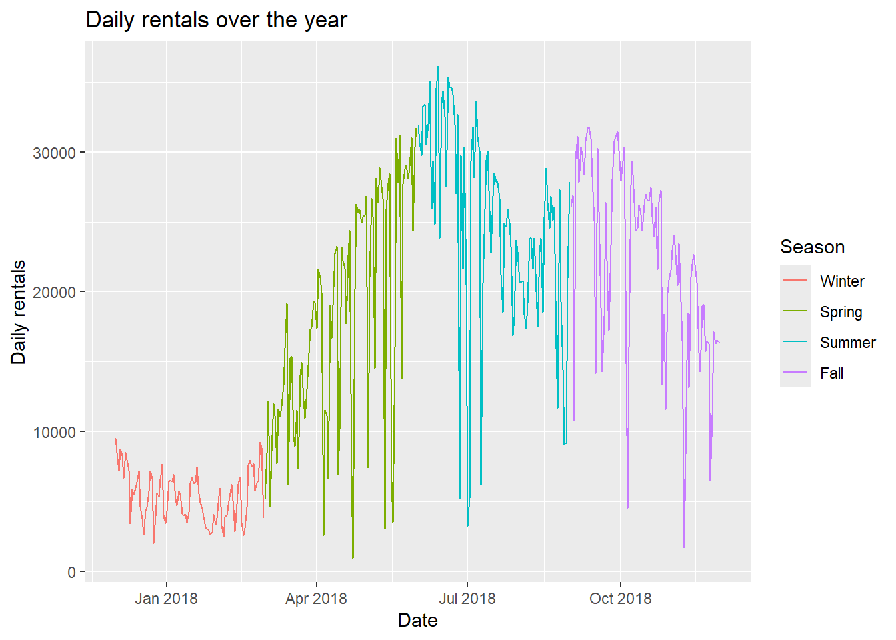
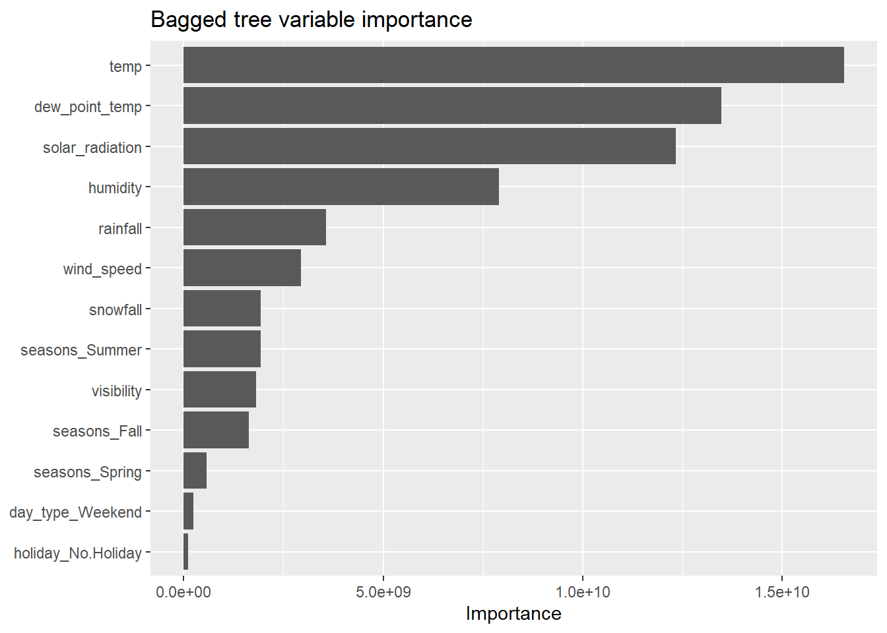

This homework focused on fitting multiple linear regression (MLR) models with tidymodels. The data record hourly bike rentals in Seoul, together with the weather and calendar conditions for each hour. The goal is to predict the number of bikes rented per day. The steps were: read in the data, explore and clean it, summarize it to one row per day, split it into training and test sets, compare three MLR models with 10-fold cross-validation, and evaluate the best one on the test set. Building on that, HW 10 adds tuned LASSO, regression tree, bagged tree, and random forest models, compares every final model on the test set using RMSE and MAE, and fits the overall best model to the full data set.
library(tidyverse)
── Attaching core tidyverse packages ──────────────────────── tidyverse 2.0.0 ──
✔ dplyr 1.2.1 ✔ readr 2.2.0
✔ forcats 1.0.1 ✔ stringr 1.6.0
✔ ggplot2 4.0.3 ✔ tibble 3.3.1
✔ lubridate 1.9.5 ✔ tidyr 1.3.2
✔ purrr 1.2.2
── Conflicts ────────────────────────────────────────── tidyverse_conflicts() ──
✖ dplyr::filter() masks stats::filter()
✖ dplyr::lag() masks stats::lag()
ℹ Use the conflicted package (<http://conflicted.r-lib.org/>) to force all conflicts to become errors
library(janitor)
Attaching package: 'janitor'
The following objects are masked from 'package:stats':
chisq.test, fisher.test
The data come from the UCI Machine Learning Repository. The file is not saved as UTF-8. It is encoded as Latin-1 (ISO-8859-1), since two of the column names contain the degree symbol (Temperature(°C) and Dew point temperature(°C)). With readr’s default UTF-8 assumption, that character can trigger an invalid multibyte string error. Telling read_csv() the file’s encoding through locale() fixes it.
Rows: 8760 Columns: 14
── Column specification ────────────────────────────────────────────────────────
Delimiter: ","
chr (4): Date, Seasons, Holiday, Functioning Day
dbl (10): Rented Bike Count, Hour, Temperature(°C), Humidity(%), Wind speed ...
ℹ Use `spec()` to retrieve the full column specification for this data.
ℹ Specify the column types or set `show_col_types = FALSE` to quiet this message.
The data have 8,760 rows, one per hour for a full year (365 × 24), and 14 columns with variables including the date, the hourly rental count (our response), the hour, eight weather measurements, and three categorical variables (Seasons, Holiday, and Functioning Day).
EDA
Checking the Data
1. Missingness: Before any cleaning, we checked whether any values are missing to prevent problems later.
colSums(is.na(bike_data))
Date Rented Bike Count Hour
0 0 0
Temperature(°C) Humidity(%) Wind speed (m/s)
0 0 0
Visibility (10m) Dew point temperature(°C) Solar Radiation (MJ/m2)
0 0 0
Rainfall(mm) Snowfall (cm) Seasons
0 0 0
Holiday Functioning Day
0 0
None of the 14 columns has missing values, so no imputing or dropping of rows is needed for that reason.
2. Column types and values: Next, we checked that each column was read in as the right type and that its values make sense. For numeric columns that means summary statistics. For categorical columns, janitor::tabyl() shows each unique value along with how often it appears. We also used janitor::get_dupes() to confirm that no date-hour combination appears more than once, since each row should be exactly one hour.
# basic summary stats for the numeric columnsbike_data |>select(where(is.numeric)) |>summary()
Rented Bike Count Hour Temperature(°C) Humidity(%)
Min. : 0.0 Min. : 0.00 Min. :-17.80 Min. : 0.00
1st Qu.: 191.0 1st Qu.: 5.75 1st Qu.: 3.50 1st Qu.:42.00
Median : 504.5 Median :11.50 Median : 13.70 Median :57.00
Mean : 704.6 Mean :11.50 Mean : 12.88 Mean :58.23
3rd Qu.:1065.2 3rd Qu.:17.25 3rd Qu.: 22.50 3rd Qu.:74.00
Max. :3556.0 Max. :23.00 Max. : 39.40 Max. :98.00
Wind speed (m/s) Visibility (10m) Dew point temperature(°C)
Min. :0.000 Min. : 27 Min. :-30.600
1st Qu.:0.900 1st Qu.: 940 1st Qu.: -4.700
Median :1.500 Median :1698 Median : 5.100
Mean :1.725 Mean :1437 Mean : 4.074
3rd Qu.:2.300 3rd Qu.:2000 3rd Qu.: 14.800
Max. :7.400 Max. :2000 Max. : 27.200
Solar Radiation (MJ/m2) Rainfall(mm) Snowfall (cm)
Min. :0.0000 Min. : 0.0000 Min. :0.00000
1st Qu.:0.0000 1st Qu.: 0.0000 1st Qu.:0.00000
Median :0.0100 Median : 0.0000 Median :0.00000
Mean :0.5691 Mean : 0.1487 Mean :0.07507
3rd Qu.:0.9300 3rd Qu.: 0.0000 3rd Qu.:0.00000
Max. :3.5200 Max. :35.0000 Max. :8.80000
# unique values (and their frequencies) for each categorical columnbike_data |>tabyl(Seasons)
Seasons n percent
Autumn 2184 0.2493151
Spring 2208 0.2520548
Summer 2208 0.2520548
Winter 2160 0.2465753
bike_data |>tabyl(Holiday)
Holiday n percent
Holiday 432 0.04931507
No Holiday 8328 0.95068493
bike_data |>tabyl(`Functioning Day`)
Functioning Day n percent
No 295 0.0336758
Yes 8465 0.9663242
# each date/hour combination should appear exactly oncebike_data |>get_dupes(Date, Hour)
No duplicate combinations found of: Date, Hour
# A tibble: 0 × 15
# ℹ 15 variables: Date <chr>, Hour <dbl>, dupe_count <int>,
# Rented Bike Count <dbl>, Temperature(°C) <dbl>, Humidity(%) <dbl>,
# Wind speed (m/s) <dbl>, Visibility (10m) <dbl>,
# Dew point temperature(°C) <dbl>, Solar Radiation (MJ/m2) <dbl>,
# Rainfall(mm) <dbl>, Snowfall (cm) <dbl>, Seasons <chr>, Holiday <chr>,
# Functioning Day <chr>
Most of the numeric columns look reasonable. Hour runs from 0 to 23, temperature ranges from -17.8°C to 39.4°C, and hourly rentals range from 0 to 3,556. A few things stand out. Humidity has a minimum of 0%, which is physically implausible and likely a sensor error, but it affects very few rows, so we left it in. Visibility tops out at exactly 2000 (20 km), which suggests the measurement is capped. Rainfall and snowfall are 0 in most hours, so both are very right-skewed. On the categorical side, the four seasons each make up about a quarter of the hours. About 5% of hours (432) fall on holidays, and about 3% (295) are marked as non-functioning, which comes up again below. get_dupes() found no duplicate date-hour combinations, so every row is a distinct hour. Date and the three categorical variables were all read in as character, so they still need to be converted.
3. Converting the date:Date came in as a character string in day/month/year format (01/12/2017 is December 1, 2017), so we converted it with lubridate::dmy().
The data cover exactly one year, from December 1, 2017 through November 30, 2018. That’s 365 days × 24 hours, which matches the 8,760 rows.
4. Converting character variables to factors:Seasons, Holiday, and Functioning Day are categorical, so we converted them to factors. For Seasons I set the levels in calendar order instead of R’s default alphabetical order, so tables and plots read Winter, Spring, Summer, Fall. The data spell this season “Autumn”, so we matched on that value with levels and relabeled it “Fall” with labels; listing “Fall” in levels alone would turn every Autumn hour into NA.
5. Renaming the variables: Finally, we renamed every column to lower snake case. janitor::clean_names() does most of this automatically by lowercasing everything, replaces spaces and punctuation with underscores, and handles symbols like % and °. The cleaned names keep their units, though (rented_bike_count, humidity_percent, rainfall_mm, …), so we followed up with rename() to shorten the ones we will use most. We matched the columns with starts_with() because the exact cleaned name for the two temperature columns depends on how the degree symbol gets transliterated on a given system, and starts_with() matches either way.
6. Summary statistics across the categorical variables: With the data cleaned up, we looked at summary statistics for the response, bike_count, both overall and across each categorical variable.
# overallbike_data |>summarize(mean =mean(bike_count), median =median(bike_count),sd =sd(bike_count), min =min(bike_count), max =max(bike_count))
# A tibble: 1 × 5
mean median sd min max
<dbl> <dbl> <dbl> <dbl> <dbl>
1 705. 504. 645. 0 3556
# across each categorical variablebike_data |>group_by(seasons) |>summarize(n =n(), mean =mean(bike_count), median =median(bike_count),sd =sd(bike_count), min =min(bike_count), max =max(bike_count))
# A tibble: 4 × 7
seasons n mean median sd min max
<fct> <int> <dbl> <dbl> <dbl> <dbl> <dbl>
1 Winter 2160 226. 203 150. 3 937
2 Spring 2208 730. 583 622. 0 3251
3 Summer 2208 1034. 906. 690. 9 3556
4 Fall 2184 820. 764. 651. 0 3298
bike_data |>group_by(holiday) |>summarize(n =n(), mean =mean(bike_count), median =median(bike_count),sd =sd(bike_count), min =min(bike_count), max =max(bike_count))
# A tibble: 2 × 7
holiday n mean median sd min max
<fct> <int> <dbl> <dbl> <dbl> <dbl> <dbl>
1 Holiday 432 500. 240 571. 0 2400
2 No Holiday 8328 715. 524. 647. 0 3556
bike_data |>group_by(functioning_day) |>summarize(n =n(), mean =mean(bike_count), median =median(bike_count),sd =sd(bike_count), min =min(bike_count), max =max(bike_count))
# A tibble: 2 × 7
functioning_day n mean median sd min max
<fct> <int> <dbl> <dbl> <dbl> <dbl> <dbl>
1 No 295 0 0 0 0 0
2 Yes 8465 729. 542 642. 2 3556
Rentals vary a lot by season. The average Summer hour has about 1,034 rentals, more than four times the roughly 226 in Winter, with Spring (730) and Fall (820) in between. Holiday hours average fewer rentals than non-holiday hours (500 vs. 715). The functioning_day summary is where something is clearly off: every one of the 295 non-functioning hours has exactly 0 rentals.
# where do the non-functioning hours fall?bike_data |>tabyl(seasons, functioning_day) |>adorn_totals("row")
seasons No Yes
Winter 0 2160
Spring 48 2160
Summer 0 2208
Fall 247 1937
Total 295 8465
The cross-tabulation shows that non-functioning hours only occur in Spring (48 hours) and Fall (247 hours). They cover 12 full days plus 7 hours of October 6, 2018. During these hours the bike-share system was not operating, so those zeros reflect the service being down, not a lack of demand. Leaving them in would pull down the averages for Spring and Fall and teach the models that certain weather conditions produce zero rentals when they don’t. So we removed the non-functioning hours. After that, functioning_day has only one value, so we dropped the column too.
That leaves 8,465 hours across 353 days. Removing the shutdowns also changes the seasonal picture: Fall’s average hourly rentals rise from about 820 to about 924, and Spring’s from about 730 to about 746.
7. Summarizing to one row per day: To simplify the analysis, we collapsed the hourly data, so each day has a single observation. We grouped by date, seasons, and holiday. Season and holiday status never change within a day, so grouping by them does not split any day into multiple rows, instead just keeps those columns in the summarized data. Within each day, we added up the variables that accumulate over the day (total rentals, total rainfall, and total snowfall). For the other weather variables (temperature, humidity, wind speed, visibility, dew point, and solar radiation) and we took the daily average. hour is dropped, since it no longer applies once the hours are combined.
The result has 353 rows, one for each remaining day, and 12 columns. This is the data used for the rest of the analysis. One day needs a caveat: October 6, 2018 had 7 non-functioning hours removed above, so its total of 16,037 rentals is based on only 17 hours instead of 24. That day also had 35.5 mm of rain, which may explain the partial shutdown. Since it’s a single day out of 353, I kept it.
8. Summaries, plots, and correlations on the daily data: With one row per day, we recreated the summary statistics, this time on daily totals instead of hourly counts.
bike_count rainfall snowfall temp
Min. : 977 Min. : 0.000 Min. : 0.000 Min. :-14.738
1st Qu.: 6967 1st Qu.: 0.000 1st Qu.: 0.000 1st Qu.: 3.304
Median :18563 Median : 0.000 Median : 0.000 Median : 13.738
Mean :17485 Mean : 3.576 Mean : 1.863 Mean : 12.776
3rd Qu.:26285 3rd Qu.: 0.500 3rd Qu.: 0.000 3rd Qu.: 22.592
Max. :36149 Max. :95.500 Max. :78.700 Max. : 33.742
humidity wind_speed visibility dew_point_temp
Min. :22.25 Min. :0.6625 Min. : 214.3 Min. :-27.750
1st Qu.:47.58 1st Qu.:1.3042 1st Qu.:1087.0 1st Qu.: -5.188
Median :57.17 Median :1.6583 Median :1557.8 Median : 4.612
Mean :58.17 Mean :1.7261 Mean :1434.0 Mean : 3.954
3rd Qu.:67.71 3rd Qu.:1.9542 3rd Qu.:1874.3 3rd Qu.: 14.921
Max. :95.88 Max. :4.0000 Max. :2000.0 Max. : 25.038
solar_radiation
Min. :0.02917
1st Qu.:0.28333
Median :0.56500
Mean :0.56773
3rd Qu.:0.82000
Max. :1.21667
Across the 353 days, daily rentals range from 977 to 36,149, with a mean of about 17,485 and a median of about 18,563. Rainfall and snowfall remain heavily skewed: 253 of the 353 days had no rain at all, and only 27 had any snow.
bike_daily |>group_by(seasons) |>summarize(n =n(), mean =mean(bike_count), median =median(bike_count),sd =sd(bike_count), min =min(bike_count), max =max(bike_count))
# A tibble: 4 × 7
seasons n mean median sd min max
<fct> <int> <dbl> <dbl> <dbl> <dbl> <dbl>
1 Winter 90 5413. 5498 1808. 2014 9539
2 Spring 90 17910. 17590 8357. 977 31681
3 Summer 92 24818. 25572. 7297. 3231 36149
4 Fall 81 22099. 23350 6711. 1721 31809
bike_daily |>group_by(holiday) |>summarize(n =n(), mean =mean(bike_count), median =median(bike_count),sd =sd(bike_count), min =min(bike_count), max =max(bike_count))
# A tibble: 2 × 7
holiday n mean median sd min max
<fct> <int> <dbl> <dbl> <dbl> <dbl> <dbl>
1 Holiday 17 12700. 7184 10504. 2014 30498
2 No Holiday 336 17727. 19104. 9862. 977 36149
bike_daily |>group_by(seasons, holiday) |>summarize(n =n(), mean =mean(bike_count), median =median(bike_count),.groups ="drop")
# A tibble: 8 × 5
seasons holiday n mean median
<fct> <fct> <int> <dbl> <dbl>
1 Winter Holiday 8 3759 3454.
2 Winter No Holiday 82 5574. 5609
3 Spring Holiday 3 15247. 13790
4 Spring No Holiday 87 18002. 17730
5 Summer Holiday 2 24532. 24532.
6 Summer No Holiday 90 24824. 25572.
7 Fall Holiday 4 22754. 21705
8 Fall No Holiday 77 22065. 23472
The seasonal pattern from the hourly data holds up. An average Winter day has about 5,400 rentals, compared to about 24,800 in Summer, with Fall (about 22,100) and Spring (about 17,900) in between. Spring has the largest spread (SD of about 8,400), which makes sense for a transition season that runs from cold March days into warm May ones. Holidays look much lower at first glance (about 12,700 vs. 17,700 rentals), but the season-by-holiday breakdown shows that comparison is misleading. Of the 17 holidays, 8 fall in Winter, the slowest season, so the holiday average is dragged down by season. Within Summer and Fall, holiday and non-holiday days average nearly the same. With only 17 holidays in total, these within-season comparisons rest on very few days.
ggplot(bike_daily, aes(x = bike_count)) +geom_histogram(bins =30) +labs(title ="Distribution of daily rentals", x ="Daily rentals", y ="Days")

The distribution of daily rentals is clearly bimodal. One cluster of days sits around 3,000 to 8,000 rentals (mostly Winter) and a second, broader cluster around 20,000 to 30,000. A single overall mean hides that split, which suggests season will be an important predictor.
ggplot(bike_daily, aes(x = seasons, y = bike_count, fill = holiday)) +geom_boxplot() +labs(title ="Daily rentals by season and holiday",x ="Season", y ="Daily rentals", fill ="")

The boxplots show the same seasonal ordering, with Winter far below the rest. The holiday gap is clear in Winter and Spring and mostly disappears in Summer and Fall. That hints that the effect of a holiday may depend on the season, which is the seasons × holiday interaction added in the second recipe below.
ggplot(bike_daily, aes(x = temp, y = bike_count, color = seasons)) +geom_point(alpha =0.7) +labs(title ="Daily rentals vs. average temperature",x ="Average temperature (°C)", y ="Daily rentals", color ="Season")

Temperature has the strongest visible relationship with rentals, but it isn’t a straight line. Rentals climb steadily as days warm up to roughly 22 to 25°C, then fall off on the hottest Summer days above about 28°C. This curve is the main motivation for the quadratic terms in the third recipe: a purely linear temperature effect would overpredict rentals on the hottest days.
ggplot(bike_daily, aes(x = rainfall, y = bike_count)) +geom_point(alpha =0.6) +labs(title ="Daily rentals vs. total rainfall",x ="Total rainfall (mm)", y ="Daily rentals")

Most days are stacked at zero rainfall, across the full range of rental counts. Once rain does fall, high-rental days become rare, and days with heavy rain (above roughly 30 mm) almost all have low rentals. The effect of rain may also depend on temperature, since a rainy summer day and a rainy winter day aren’t comparable. That’s the reasoning behind the temperature × rainfall interaction in the second recipe.
ggplot(bike_daily, aes(x = date, y = bike_count, color = seasons)) +geom_line() +labs(title ="Daily rentals over the year",x ="Date", y ="Daily rentals", color ="Season")

Over the year, rentals rise from their Winter lows, peak around June, and stay high through early Fall before tapering off in November. The sharp single-day dips throughout Spring, Summer, and Fall line up with the rainfall pattern above.
Among the numeric variables, daily rentals are most strongly correlated with average temperature (r = 0.75), solar radiation (0.74), and dew point temperature (0.65). Snowfall (-0.27), rainfall (-0.24), and wind speed (-0.19) are weakly negatively correlated with rentals, and humidity has essentially no linear relationship (0.04). One relationship to keep in mind for modeling: temperature and dew point temperature are almost perfectly correlated (r = 0.96). Including both in a linear model makes their individual coefficients unstable and hard to interpret, though predictions shouldn’t suffer much. Since the goal is prediction, we kept both.
Split the Data
Before fitting anything, we split the daily data into a training set (75%) and a test set (25%). We stratified the split on seasons, so both sets get about the same mix of seasons. Rentals differ so much by season that an unlucky split, for example one with very few Winter days in the training set, could distort the models. We then split the training set into 10 cross-validation folds, which we use to compare the three candidate models.
The training set has 263 days and the test set 90, and each season makes up about a quarter of both. Note how each CV fold trains on 236 or 237 days and evaluates on the remaining 26 or 27.
Fitting MLR Models
Recipes
Recipe 1. This recipe sets up the preprocessing that all three models share. We gave date an ID role so it stays out of the model, but we still used it to create a Weekday/Weekend variable with step_date() and step_mutate() since rentals likely differ between the two. Then, we standardized the numeric predictors because they are in different scales and created dummy variables for seasons, holiday, and day_type.
This returns 13 predictors, where the 8 standardized weather variables, 3 season dummies (with Winter as the baseline), a holiday indicator, and a weekend indicator.
Recipe 2. This recipe builds on Recipe 1 by adding three interactions suggested by the EDA such as seasons × holiday, seasons × temperature, and temperature × rainfall. We used starts_with("seasons") so that each season dummy gets its own interaction term.
This adds 7 interaction terms (3 season × holiday, 3 season × temperature, and temperature × rainfall), for 20 predictors in total.
Recipe 3. This recipe adds quadratic terms for each numeric predictor on top of Recipe 2. The temperature scatterplot showed rentals rising and then dropping on the hottest days, a curve a straight line can’t capture. We listed the numeric predictors by name instead of using all_numeric_predictors(), since that would also square the dummy and interaction columns.
• Polynomial expansion on: temp, humidity, wind_speed, visibility, ...
Each of the 8 numeric predictors is replaced by a linear and a quadratic term, giving 28 predictors.
Model Fitting
All three models are ordinary multiple linear regressions fit with the "lm" engine. We paired the same model specification with each recipe in a workflow, so each workflow carries its own preprocessing and fitting steps together.
To compare the models we fit each workflow with fit_resamples() on the 10 CV folds. In each fold, the model is trained on 9/10 of the training data and evaluated on the remaining 1/10, and the metrics are averaged across the folds.
# A tibble: 3 × 7
.metric .estimator mean n std_err .config model
<chr> <chr> <dbl> <int> <dbl> <chr> <chr>
1 rmse standard 3005. 10 275. pre0_mod0_post0 Recipe 3: + quadratics
2 rmse standard 3064. 10 296. pre0_mod0_post0 Recipe 2: + interactio…
3 rmse standard 4095. 10 204. pre0_mod0_post0 Recipe 1: main effects
Notice how fitting these models produces a “prediction from rank-deficient fit” warning in 2 of the 10 folds for Recipes 2 and 3. Because there are only 2 Summer holidays given in the whole dataset and some folds the training data contain no Summer holiday at all. For those fold cases the Summer × holiday interaction column is identical to the Summer dummy, then lm() drops one of the two redundant columns. The remaining coefficients and the predictions are unaffected, so the warning is harmless.
Adding interactions made the biggest difference CV RMSE dropped from about 4,095 rentals per day to approximately 3,064. The quadratic terms used in Recipe 3 lowered further to about 3,005 suggesting that is the best model by CV RMSE. Notice how the difference between Recipe 2 and Recipe 3 is about 60 rentals which is within one standard error, however we still chose Recipe 3 due to its lower CV error and since the temperature scatterplot suggested a curved relationship.
Final Model
Since we chose Recipe 3, we need to refit it on the whole training set and evaluated it on the test using the last_fit().
# A tibble: 1 × 4
.metric .estimator .estimate .config
<chr> <chr> <dbl> <chr>
1 rmse standard 2942. pre0_mod0_post0
The chosen model’s test-set RMSE is 2,942 rentals per day. Notice how that is in the line with its CV estimate, meaning that the model generalizes to new days about as well as cross-validation predicted. It also does not appear to be overfitting.
Notice that since these coefficients are on a standardized scale, they show which predictors matter instead than an exact per-unit effect. Weekends have about 2,400 fewer rentals than weekdays and sunny days have the biggest increase on rentals. Temperature’s effect depends on each season as warmer days help in the Spring but during the Summer is not too beneficial as when the weather is too hot.
MLR Conclusion
Overall among the three models, the one with interactions and squared terms performed best in cross-validation and achieved a test RMSE of approximately 2,942 daily rentals, which was close to the estimated CV, then it generalizes well to the new data. The best improvement in this model is that it was capable to let temperature’s effect vary by season. We noticed how season, temperature, solar radiation, rainfall, and whether it is a weekend were strong predictors of daily bike rentals in Seoul.
Additional Models
library(glmnet)
Loading required package: Matrix
Attaching package: 'Matrix'
The following objects are masked from 'package:tidyr':
expand, pack, unpack
Loaded glmnet 5.2
library(rpart.plot)
Loading required package: rpart
Attaching package: 'rpart'
The following object is masked from 'package:dials':
prune
To verify whether more flexible models can beat linear regression, we fit four more model types such as LASSO, a regression tree, a bagged tree, and a random forest. All four use Recipe 1 given above as its contains main effects only, with no interactions or quadratic terms. And the same 10 CV folds, so we can compare results directly to the MLR models. Each model has tuning parameters, meaning that for each one we try a grid of values with tune_grid(), choose the value with the lowest CV RMSE, and then fit that final model on the full training set with last_fit().
LASSO
LASSO is defined as a linear regression which contains a penalty that shrinks coefficients towards zero. When there exists a large enough penalty sets some exactly to zero, removing those predictors from the model. The strength of the penalty is the tuning parameter, and setting mixture = 1 makes it a LASSO, as opposed to ridge regression or a mix of the two.
# A tibble: 200 × 7
penalty .metric .estimator mean n std_err .config
<dbl> <chr> <chr> <dbl> <int> <dbl> <chr>
1 1 e-10 rmse standard 4121. 10 187. pre0_mod001_post0
2 1.12e-10 rmse standard 4121. 10 187. pre0_mod002_post0
3 1.26e-10 rmse standard 4121. 10 187. pre0_mod003_post0
4 1.41e-10 rmse standard 4121. 10 187. pre0_mod004_post0
5 1.59e-10 rmse standard 4121. 10 187. pre0_mod005_post0
6 1.78e-10 rmse standard 4121. 10 187. pre0_mod006_post0
7 2.00e-10 rmse standard 4121. 10 187. pre0_mod007_post0
8 2.25e-10 rmse standard 4121. 10 187. pre0_mod008_post0
9 2.52e-10 rmse standard 4121. 10 187. pre0_mod009_post0
10 2.83e-10 rmse standard 4121. 10 187. pre0_mod010_post0
11 3.18e-10 rmse standard 4121. 10 187. pre0_mod011_post0
12 3.57e-10 rmse standard 4121. 10 187. pre0_mod012_post0
13 4.01e-10 rmse standard 4121. 10 187. pre0_mod013_post0
14 4.50e-10 rmse standard 4121. 10 187. pre0_mod014_post0
15 5.05e-10 rmse standard 4121. 10 187. pre0_mod015_post0
16 5.67e-10 rmse standard 4121. 10 187. pre0_mod016_post0
17 6.37e-10 rmse standard 4121. 10 187. pre0_mod017_post0
18 7.15e-10 rmse standard 4121. 10 187. pre0_mod018_post0
19 8.03e-10 rmse standard 4121. 10 187. pre0_mod019_post0
20 9.01e-10 rmse standard 4121. 10 187. pre0_mod020_post0
21 1.01e- 9 rmse standard 4121. 10 187. pre0_mod021_post0
22 1.14e- 9 rmse standard 4121. 10 187. pre0_mod022_post0
23 1.28e- 9 rmse standard 4121. 10 187. pre0_mod023_post0
24 1.43e- 9 rmse standard 4121. 10 187. pre0_mod024_post0
25 1.61e- 9 rmse standard 4121. 10 187. pre0_mod025_post0
26 1.80e- 9 rmse standard 4121. 10 187. pre0_mod026_post0
27 2.03e- 9 rmse standard 4121. 10 187. pre0_mod027_post0
28 2.27e- 9 rmse standard 4121. 10 187. pre0_mod028_post0
29 2.55e- 9 rmse standard 4121. 10 187. pre0_mod029_post0
30 2.87e- 9 rmse standard 4121. 10 187. pre0_mod030_post0
31 3.22e- 9 rmse standard 4121. 10 187. pre0_mod031_post0
32 3.61e- 9 rmse standard 4121. 10 187. pre0_mod032_post0
33 4.06e- 9 rmse standard 4121. 10 187. pre0_mod033_post0
34 4.55e- 9 rmse standard 4121. 10 187. pre0_mod034_post0
35 5.11e- 9 rmse standard 4121. 10 187. pre0_mod035_post0
36 5.74e- 9 rmse standard 4121. 10 187. pre0_mod036_post0
37 6.44e- 9 rmse standard 4121. 10 187. pre0_mod037_post0
38 7.23e- 9 rmse standard 4121. 10 187. pre0_mod038_post0
39 8.12e- 9 rmse standard 4121. 10 187. pre0_mod039_post0
40 9.12e- 9 rmse standard 4121. 10 187. pre0_mod040_post0
41 1.02e- 8 rmse standard 4121. 10 187. pre0_mod041_post0
42 1.15e- 8 rmse standard 4121. 10 187. pre0_mod042_post0
43 1.29e- 8 rmse standard 4121. 10 187. pre0_mod043_post0
44 1.45e- 8 rmse standard 4121. 10 187. pre0_mod044_post0
45 1.63e- 8 rmse standard 4121. 10 187. pre0_mod045_post0
46 1.83e- 8 rmse standard 4121. 10 187. pre0_mod046_post0
47 2.05e- 8 rmse standard 4121. 10 187. pre0_mod047_post0
48 2.30e- 8 rmse standard 4121. 10 187. pre0_mod048_post0
49 2.58e- 8 rmse standard 4121. 10 187. pre0_mod049_post0
50 2.90e- 8 rmse standard 4121. 10 187. pre0_mod050_post0
51 3.26e- 8 rmse standard 4121. 10 187. pre0_mod051_post0
52 3.65e- 8 rmse standard 4121. 10 187. pre0_mod052_post0
53 4.10e- 8 rmse standard 4121. 10 187. pre0_mod053_post0
54 4.61e- 8 rmse standard 4121. 10 187. pre0_mod054_post0
55 5.17e- 8 rmse standard 4121. 10 187. pre0_mod055_post0
56 5.81e- 8 rmse standard 4121. 10 187. pre0_mod056_post0
57 6.52e- 8 rmse standard 4121. 10 187. pre0_mod057_post0
58 7.32e- 8 rmse standard 4121. 10 187. pre0_mod058_post0
59 8.21e- 8 rmse standard 4121. 10 187. pre0_mod059_post0
60 9.22e- 8 rmse standard 4121. 10 187. pre0_mod060_post0
61 1.04e- 7 rmse standard 4121. 10 187. pre0_mod061_post0
62 1.16e- 7 rmse standard 4121. 10 187. pre0_mod062_post0
63 1.30e- 7 rmse standard 4121. 10 187. pre0_mod063_post0
64 1.46e- 7 rmse standard 4121. 10 187. pre0_mod064_post0
65 1.64e- 7 rmse standard 4121. 10 187. pre0_mod065_post0
66 1.85e- 7 rmse standard 4121. 10 187. pre0_mod066_post0
67 2.07e- 7 rmse standard 4121. 10 187. pre0_mod067_post0
68 2.33e- 7 rmse standard 4121. 10 187. pre0_mod068_post0
69 2.61e- 7 rmse standard 4121. 10 187. pre0_mod069_post0
70 2.93e- 7 rmse standard 4121. 10 187. pre0_mod070_post0
71 3.29e- 7 rmse standard 4121. 10 187. pre0_mod071_post0
72 3.70e- 7 rmse standard 4121. 10 187. pre0_mod072_post0
73 4.15e- 7 rmse standard 4121. 10 187. pre0_mod073_post0
74 4.66e- 7 rmse standard 4121. 10 187. pre0_mod074_post0
75 5.23e- 7 rmse standard 4121. 10 187. pre0_mod075_post0
76 5.87e- 7 rmse standard 4121. 10 187. pre0_mod076_post0
77 6.59e- 7 rmse standard 4121. 10 187. pre0_mod077_post0
78 7.40e- 7 rmse standard 4121. 10 187. pre0_mod078_post0
79 8.31e- 7 rmse standard 4121. 10 187. pre0_mod079_post0
80 9.33e- 7 rmse standard 4121. 10 187. pre0_mod080_post0
81 1.05e- 6 rmse standard 4121. 10 187. pre0_mod081_post0
82 1.18e- 6 rmse standard 4121. 10 187. pre0_mod082_post0
83 1.32e- 6 rmse standard 4121. 10 187. pre0_mod083_post0
84 1.48e- 6 rmse standard 4121. 10 187. pre0_mod084_post0
85 1.66e- 6 rmse standard 4121. 10 187. pre0_mod085_post0
86 1.87e- 6 rmse standard 4121. 10 187. pre0_mod086_post0
87 2.10e- 6 rmse standard 4121. 10 187. pre0_mod087_post0
88 2.35e- 6 rmse standard 4121. 10 187. pre0_mod088_post0
89 2.64e- 6 rmse standard 4121. 10 187. pre0_mod089_post0
90 2.97e- 6 rmse standard 4121. 10 187. pre0_mod090_post0
91 3.33e- 6 rmse standard 4121. 10 187. pre0_mod091_post0
92 3.74e- 6 rmse standard 4121. 10 187. pre0_mod092_post0
93 4.20e- 6 rmse standard 4121. 10 187. pre0_mod093_post0
94 4.71e- 6 rmse standard 4121. 10 187. pre0_mod094_post0
95 5.29e- 6 rmse standard 4121. 10 187. pre0_mod095_post0
96 5.94e- 6 rmse standard 4121. 10 187. pre0_mod096_post0
97 6.67e- 6 rmse standard 4121. 10 187. pre0_mod097_post0
98 7.49e- 6 rmse standard 4121. 10 187. pre0_mod098_post0
99 8.41e- 6 rmse standard 4121. 10 187. pre0_mod099_post0
100 9.44e- 6 rmse standard 4121. 10 187. pre0_mod100_post0
101 1.06e- 5 rmse standard 4121. 10 187. pre0_mod101_post0
102 1.19e- 5 rmse standard 4121. 10 187. pre0_mod102_post0
103 1.34e- 5 rmse standard 4121. 10 187. pre0_mod103_post0
104 1.50e- 5 rmse standard 4121. 10 187. pre0_mod104_post0
105 1.68e- 5 rmse standard 4121. 10 187. pre0_mod105_post0
106 1.89e- 5 rmse standard 4121. 10 187. pre0_mod106_post0
107 2.12e- 5 rmse standard 4121. 10 187. pre0_mod107_post0
108 2.38e- 5 rmse standard 4121. 10 187. pre0_mod108_post0
109 2.67e- 5 rmse standard 4121. 10 187. pre0_mod109_post0
110 3.00e- 5 rmse standard 4121. 10 187. pre0_mod110_post0
111 3.37e- 5 rmse standard 4121. 10 187. pre0_mod111_post0
112 3.78e- 5 rmse standard 4121. 10 187. pre0_mod112_post0
113 4.25e- 5 rmse standard 4121. 10 187. pre0_mod113_post0
114 4.77e- 5 rmse standard 4121. 10 187. pre0_mod114_post0
115 5.35e- 5 rmse standard 4121. 10 187. pre0_mod115_post0
116 6.01e- 5 rmse standard 4121. 10 187. pre0_mod116_post0
117 6.75e- 5 rmse standard 4121. 10 187. pre0_mod117_post0
118 7.58e- 5 rmse standard 4121. 10 187. pre0_mod118_post0
119 8.50e- 5 rmse standard 4121. 10 187. pre0_mod119_post0
120 9.55e- 5 rmse standard 4121. 10 187. pre0_mod120_post0
121 1.07e- 4 rmse standard 4121. 10 187. pre0_mod121_post0
122 1.20e- 4 rmse standard 4121. 10 187. pre0_mod122_post0
123 1.35e- 4 rmse standard 4121. 10 187. pre0_mod123_post0
124 1.52e- 4 rmse standard 4121. 10 187. pre0_mod124_post0
125 1.70e- 4 rmse standard 4121. 10 187. pre0_mod125_post0
126 1.91e- 4 rmse standard 4121. 10 187. pre0_mod126_post0
127 2.15e- 4 rmse standard 4121. 10 187. pre0_mod127_post0
128 2.41e- 4 rmse standard 4121. 10 187. pre0_mod128_post0
129 2.70e- 4 rmse standard 4121. 10 187. pre0_mod129_post0
130 3.04e- 4 rmse standard 4121. 10 187. pre0_mod130_post0
131 3.41e- 4 rmse standard 4121. 10 187. pre0_mod131_post0
132 3.83e- 4 rmse standard 4121. 10 187. pre0_mod132_post0
133 4.30e- 4 rmse standard 4121. 10 187. pre0_mod133_post0
134 4.82e- 4 rmse standard 4121. 10 187. pre0_mod134_post0
135 5.42e- 4 rmse standard 4121. 10 187. pre0_mod135_post0
136 6.08e- 4 rmse standard 4121. 10 187. pre0_mod136_post0
137 6.83e- 4 rmse standard 4121. 10 187. pre0_mod137_post0
138 7.66e- 4 rmse standard 4121. 10 187. pre0_mod138_post0
139 8.60e- 4 rmse standard 4121. 10 187. pre0_mod139_post0
140 9.66e- 4 rmse standard 4121. 10 187. pre0_mod140_post0
141 1.08e- 3 rmse standard 4121. 10 187. pre0_mod141_post0
142 1.22e- 3 rmse standard 4121. 10 187. pre0_mod142_post0
143 1.37e- 3 rmse standard 4121. 10 187. pre0_mod143_post0
144 1.53e- 3 rmse standard 4121. 10 187. pre0_mod144_post0
145 1.72e- 3 rmse standard 4121. 10 187. pre0_mod145_post0
146 1.93e- 3 rmse standard 4121. 10 187. pre0_mod146_post0
147 2.17e- 3 rmse standard 4121. 10 187. pre0_mod147_post0
148 2.44e- 3 rmse standard 4121. 10 187. pre0_mod148_post0
149 2.74e- 3 rmse standard 4121. 10 187. pre0_mod149_post0
150 3.07e- 3 rmse standard 4121. 10 187. pre0_mod150_post0
151 3.45e- 3 rmse standard 4121. 10 187. pre0_mod151_post0
152 3.87e- 3 rmse standard 4121. 10 187. pre0_mod152_post0
153 4.35e- 3 rmse standard 4121. 10 187. pre0_mod153_post0
154 4.88e- 3 rmse standard 4121. 10 187. pre0_mod154_post0
155 5.48e- 3 rmse standard 4121. 10 187. pre0_mod155_post0
156 6.15e- 3 rmse standard 4121. 10 187. pre0_mod156_post0
157 6.91e- 3 rmse standard 4121. 10 187. pre0_mod157_post0
158 7.75e- 3 rmse standard 4121. 10 187. pre0_mod158_post0
159 8.70e- 3 rmse standard 4121. 10 187. pre0_mod159_post0
160 9.77e- 3 rmse standard 4121. 10 187. pre0_mod160_post0
161 1.10e- 2 rmse standard 4121. 10 187. pre0_mod161_post0
162 1.23e- 2 rmse standard 4121. 10 187. pre0_mod162_post0
163 1.38e- 2 rmse standard 4121. 10 187. pre0_mod163_post0
164 1.55e- 2 rmse standard 4121. 10 187. pre0_mod164_post0
165 1.74e- 2 rmse standard 4121. 10 187. pre0_mod165_post0
166 1.96e- 2 rmse standard 4121. 10 187. pre0_mod166_post0
167 2.20e- 2 rmse standard 4121. 10 187. pre0_mod167_post0
168 2.47e- 2 rmse standard 4121. 10 187. pre0_mod168_post0
169 2.77e- 2 rmse standard 4121. 10 187. pre0_mod169_post0
170 3.11e- 2 rmse standard 4121. 10 187. pre0_mod170_post0
171 3.49e- 2 rmse standard 4121. 10 187. pre0_mod171_post0
172 3.92e- 2 rmse standard 4121. 10 187. pre0_mod172_post0
173 4.40e- 2 rmse standard 4121. 10 187. pre0_mod173_post0
174 4.94e- 2 rmse standard 4121. 10 187. pre0_mod174_post0
175 5.54e- 2 rmse standard 4121. 10 187. pre0_mod175_post0
176 6.22e- 2 rmse standard 4121. 10 187. pre0_mod176_post0
177 6.99e- 2 rmse standard 4121. 10 187. pre0_mod177_post0
178 7.84e- 2 rmse standard 4121. 10 187. pre0_mod178_post0
179 8.80e- 2 rmse standard 4121. 10 187. pre0_mod179_post0
180 9.88e- 2 rmse standard 4121. 10 187. pre0_mod180_post0
181 1.11e- 1 rmse standard 4121. 10 187. pre0_mod181_post0
182 1.25e- 1 rmse standard 4121. 10 187. pre0_mod182_post0
183 1.40e- 1 rmse standard 4121. 10 187. pre0_mod183_post0
184 1.57e- 1 rmse standard 4121. 10 187. pre0_mod184_post0
185 1.76e- 1 rmse standard 4121. 10 187. pre0_mod185_post0
186 1.98e- 1 rmse standard 4121. 10 187. pre0_mod186_post0
187 2.22e- 1 rmse standard 4121. 10 187. pre0_mod187_post0
188 2.49e- 1 rmse standard 4121. 10 187. pre0_mod188_post0
189 2.80e- 1 rmse standard 4121. 10 187. pre0_mod189_post0
190 3.14e- 1 rmse standard 4121. 10 187. pre0_mod190_post0
191 3.53e- 1 rmse standard 4121. 10 187. pre0_mod191_post0
192 3.96e- 1 rmse standard 4121. 10 187. pre0_mod192_post0
193 4.45e- 1 rmse standard 4121. 10 187. pre0_mod193_post0
194 4.99e- 1 rmse standard 4121. 10 187. pre0_mod194_post0
195 5.61e- 1 rmse standard 4121. 10 187. pre0_mod195_post0
196 6.29e- 1 rmse standard 4121. 10 187. pre0_mod196_post0
197 7.07e- 1 rmse standard 4121. 10 187. pre0_mod197_post0
198 7.93e- 1 rmse standard 4121. 10 187. pre0_mod198_post0
199 8.91e- 1 rmse standard 4121. 10 187. pre0_mod199_post0
200 1 e+ 0 rmse standard 4121. 10 187. pre0_mod200_post0
Every penalty value returns the same CV RMSE, about 4,121 rentals per day. The default penalty() grid only goes from 10-10 up to 1, which is tiny compared to a response measured in the thousands, so every value in the grid ends up with essentially the same fit. That RMSE is close to the MLR version of Recipe 1 (about 4,095), which makes sense, since a LASSO with almost no penalty is nearly ordinary regression.
Even with a small penalty, the LASSO made one meaningful change: it set the temperature coefficient to exactly 0 and kept dew point temperature instead. That fits what we saw in the EDA, where the two are almost perfectly correlated (r = 0.96). The LASSO dropped one of the redundant predictors, while ordinary regression kept both. The remaining coefficients point in the same directions as before: rain, humidity, and weekends lower rentals, while solar radiation, the non-Winter seasons, and non-holidays raise them.
Regression Tree
A regression tree is a non-linear model that splits the predictor space into rectangular regions, then fits a constant value in each region. The tuning parameters are tree_depth, which controls how many splits the tree can make, and cost_complexity, which controls how much the tree is pruned. A larger cost_complexity produces a smaller tree.
# A tibble: 5 × 8
cost_complexity tree_depth .metric .estimator mean n std_err .config
<dbl> <int> <chr> <chr> <dbl> <int> <dbl> <chr>
1 0.0000000001 11 rmse standard 4153. 10 104. pre0_mod04_…
2 0.0000000001 15 rmse standard 4153. 10 104. pre0_mod05_…
3 0.000000001 11 rmse standard 4153. 10 104. pre0_mod09_…
4 0.000000001 15 rmse standard 4153. 10 104. pre0_mod10_…
5 0.00000001 11 rmse standard 4153. 10 104. pre0_mod14_…
Depth mattered much more than the pruning penalty. A tree with a single split (depth 1) has a CV RMSE of about 7,200. Allowing depth 4 brings that down to about 4,500, and the best trees, at depth 11 or more, reach about 4,153. Beyond that, extra depth makes no difference, because the tree stops splitting on its own once groups get smaller than 20 days. The penalty only had an effect at its largest values (0.001 and above). At 0.1, it pruned the tree back so far that the RMSE rose to about 5,760. Several settings tie for the best CV RMSE because they all produce the same tree, so it doesn’t matter which one select_best() picks.
The final tree has 23 final groups (leaves), so the plot is busy, but the top splits tell the main story. The splits are on the standardized scale from Recipe 1, so values like -0.28 are in standard deviations rather than °C. The very first split is on temperature, at about 9.5°C. On colder days, the tree next separates Fall days from the rest, and then the darker days with less sun. On warmer days, it splits first on solar radiation, separating out very dark days, and then on rainfall (about 1.75 mm), before splitting further on temperature, humidity, and visibility. Temperature, dew point, and solar radiation are the predictors the tree relies on most, which matches the correlations from the EDA.
Bagged Tree
A single regression tree is unstable, implying that small changes in the data can produce a very different tree. Bagging stabilizes the predictions by averaging many trees fit to bootstrap samples of the training data. The tuning parameter cost_complexity controls how much each tree is pruned, with larger values producing smaller trees.
Registered S3 method overwritten by 'butcher':
method from
as.character.dev_topic generics
Registered S3 method overwritten by 'butcher':
method from
as.character.dev_topic generics
Registered S3 method overwritten by 'butcher':
method from
as.character.dev_topic generics
Registered S3 method overwritten by 'butcher':
method from
as.character.dev_topic generics
Registered S3 method overwritten by 'butcher':
method from
as.character.dev_topic generics
Registered S3 method overwritten by 'butcher':
method from
as.character.dev_topic generics
Registered S3 method overwritten by 'butcher':
method from
as.character.dev_topic generics
Registered S3 method overwritten by 'butcher':
method from
as.character.dev_topic generics
Registered S3 method overwritten by 'butcher':
method from
as.character.dev_topic generics
Registered S3 method overwritten by 'butcher':
method from
as.character.dev_topic generics
bag_grid |>show_best(metric ="rmse")
# A tibble: 5 × 7
cost_complexity .metric .estimator mean n std_err .config
<dbl> <chr> <chr> <dbl> <int> <dbl> <chr>
1 0.0000139 rmse standard 3059. 10 151. pre0_mod09_post0
2 0.00000000193 rmse standard 3091. 10 135. pre0_mod03_post0
3 0.000268 rmse standard 3093. 10 180. pre0_mod11_post0
4 0.000000164 rmse standard 3096. 10 150. pre0_mod06_post0
5 0.00118 rmse standard 3101. 10 133. pre0_mod12_post0
Bagging is a big improvement over the single tree. For small penalty values, the CV RMSE stays around 3,100 rentals per day, compared to about 4,153 for the single tree, which puts it close to the best MLR model (about 3,005). The small differences between neighboring penalty values are mostly random noise from the bootstrap samples. Only the largest penalties clearly hurt, because they prune each tree back so far that it can’t capture much: at 0.1, the CV RMSE jumps to about 5,000.
Registered S3 method overwritten by 'butcher':
method from
as.character.dev_topic generics
bag_final_fit |>extract_fit_engine() |>pluck("imp") |>mutate(term =fct_reorder(term, value)) |>ggplot(aes(x = value, y = term)) +geom_col() +labs(title ="Bagged tree variable importance", x ="Importance", y =NULL)

The variable importance plot shows how much each predictor improved the fit, summed over all its splits and averaged across the 50 trees. Temperature is the most important predictor, followed closely by dew point temperature and solar radiation, then humidity and rainfall. The season, holiday, and weekend indicators are near the bottom. That’s different from the MLR and LASSO models, where the weekend effect was clearly significant. Trees get most of their improvement from splitting on the continuous weather variables, so a 0/1 variable with a moderate effect rarely gets chosen for a split.
Random Forest
A random forest is a bagged tree model which adds randomness to the tree-building process. Each tree is fit to a bootstrap sample of the training data, and at each split only a random subset of predictors is considered. The tuning parameter mtry controls how many predictors are considered at each split. A smaller mtry increases the randomness and reduces correlation between trees, which can improve predictions. Recipe 1 has 13 predictors, so we tried every value of mtry from 1 to 13, with 500 trees per forest.
# A tibble: 5 × 7
mtry .metric .estimator mean n std_err .config
<int> <chr> <chr> <dbl> <int> <dbl> <chr>
1 9 rmse standard 3036. 10 124. pre0_mod09_post0
2 13 rmse standard 3042. 10 139. pre0_mod13_post0
3 10 rmse standard 3048. 10 127. pre0_mod10_post0
4 11 rmse standard 3057. 10 138. pre0_mod11_post0
5 12 rmse standard 3060. 10 143. pre0_mod12_post0
mtry matters a lot at the low end. With only 1 predictor available per split, the trees are often forced to split on weak variables, and the CV RMSE is about 5,100. It drops quickly to about 3,600 at 2 and 3,200 at 4, then levels off at around 3,040 to 3,070 from 8 predictors on. The best forests perform about as well in cross-validation as the bagged tree and the best MLR model, and the differences among the top mtry values are small enough to be mostly random noise.
Getting variable importance out of a random forest takes an extra step: ranger doesn’t calculate it unless asked, so we set importance = "impurity" in set_engine() and pulled the scores from the underlying ranger fit with extract_fit_engine(). Temperature dominates, and solar radiation is a clear second at roughly half of temperature’s importance, with everything else far behind. Dew point ranks much lower here than in the bagged tree because the two methods measure importance differently: rpart also gives credit to variables that were close runners-up for a split, so dew point shares credit with the nearly identical temperature, while the random forest only credits the splits that were actually made.
Comparing all the Final Models
With the best version of each model type chosen by cross-validation, the final step is to compare them on the test set, which none of them has seen yet. The best MLR model from HW 9 (Recipe 3) was only evaluated on RMSE, so we refit it with last_fit() to also get the MAE (mean absolute error). RMSE squares each error before averaging, so it penalizes a few large misses heavily. MAE is the average size of a miss in rentals per day, which makes it easier to interpret and less sensitive to the occasional very bad prediction.
# A tibble: 5 × 3
model rmse mae
<chr> <dbl> <dbl>
1 Random forest 2197. 1691.
2 Bagged tree 2309. 1856.
3 MLR (Recipe 3) 2942. 2157.
4 Regression tree 3514. 2543.
5 LASSO 4138. 3077.
The random forest has the best test-set performance on both metrics, with an RMSE of about 2,240 and an MAE of about 1,760 rentals per day. The bagged tree is a close second (about 2,350 and 1,920), and both tree ensembles beat the best MLR model (about 2,942 and 2,157). The single regression tree (about 3,514 and 2,543) and the LASSO (about 4,138 and 3,077) trail well behind. Both are limited to the main-effects recipe in their own way: the LASSO can’t capture the curved and season-dependent effects the MLR model got from its interactions and quadratic terms, and a single tree’s predictions jump between a few fixed values. The ensembles get around both problems, since averaging hundreds of trees lets them pick up nonlinear and interacting effects automatically. In cross-validation the forest, the bagged tree, and the MLR model were all close (about 3,000 to 3,100), so with only 90 test days part of the ensembles’ lead may be luck, but they come out ahead on both metrics.
The final fits for the other models were summarized in their own sections above: the LASSO coefficient table, the regression tree plot, and the variable importance plots for the bagged tree and random forest. For completeness, here is the coefficient table for the final MLR model, which is identical to the one in the Final Model section.
Since the random forest performed best, the last step is to refit it, with the mtry value chosen by cross-validation, on the entire data set: all 353 days, training and test combined. That’s the version we’d use to predict future days, since it learns from every observation we have.
Building on the MLR models from HW 9, we added tuned LASSO, regression tree, bagged tree, and random forest models, all using the main-effects recipe. The tree ensembles did best, and the random forest came out on top on the test set by both RMSE and MAE, so it is our final model. A single tree and the LASSO did noticeably worse, which shows that this data needs a model that can capture nonlinear and interacting effects. The ensembles learn these on their own, while the MLR model only did well once we added them by hand. Across every model, temperature and solar radiation stood out as the most important drivers of daily bike rentals in Seoul.